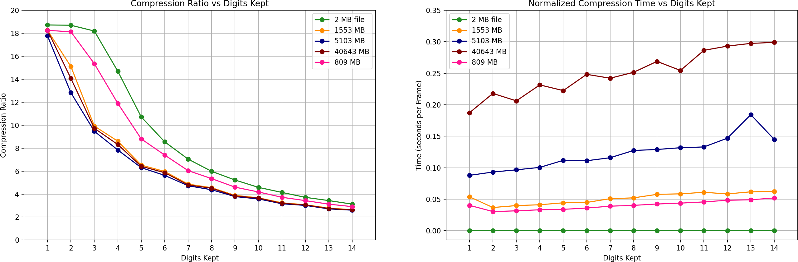

Utilities
The utils folder contains scripts and programs that provide additional functionality for working with oxDNA.
generate-sa.py
This script generates starting configurations for DNA strands in a simulation box. It supports single-stranded DNA (ssDNA), double-stranded DNA (dsDNA) with blunt ends, and dsDNA with sticky ends.
Note
This script generates old-format topology files.
Usage
python generate-sa.py <box_size> <sequences_file>
<box_size>: The side length of the cubic simulation box.<sequences_file>: A file containing the DNA sequences, one per line, with optional prefixes.
The script reads the sequences from the file and generates positions for the nucleotides, ensuring no overlaps occur. The input file format supports:
Plain sequences (e.g.,
ATATATA) for single strands.DOUBLE <sequence>for double-stranded DNA with blunt ends.STICKY <sticky_length> <top_sequence> <bottom_sticky_end_sequence>for double-stranded DNA with sticky ends of the specified length. As an example,STICKY 4 AAAAACGACG TTTTwill generate a double strand withAAAAandTTTTsticky ends.
convert.py
This script converts oxDNA topology and configuration files between the old and new formats.
Usage
python convert.py <topology> <configuration> [-p prefix] [-i]
<topology>: The topology file to convert.<configuration>: The configuration file to convert.-p prefix: Optional prefix for output files (default: “converted_”).-i: Write output files to the input directory instead of current directory.
The script automatically detects the format of the input files and converts them accordingly.
decompress_zstd.py
This script decompresses oxDNA files that have been compressed using Zstandard compression, which is done by either setting trajectory_compression = true in the main input file (for trajectories), or by setting compress = true in data_output_* observable sections. It requires the zstandard library.
Usage
python decompress_zstd.py <compressed_file> [output_file]
<compressed_file>: The compressed oxDNA file to decompress.[output_file]: Optional output file name. If not provided, the output will be written to<compressed_file>.decompressed.
The script reads the custom header (magic bytes ‘OXD\x01’, version, compression level) and decompresses the Zstandard-compressed data stream.
Compressing trajectory files
Overview
Simulation trajectory files often become extremely large because they store:
floating‑point particle coordinates
simulation time values
simulation box vectors
energy values
particle state values
repeated structural data across frames
Standard trajectory formats store numbers as ASCII text, which is inefficient both in storage and parsing performance.
Here we provide two utility programs that can be used to compress and decompress oxDNA trajectory files using a custom format developed by Victor Slivinskis. This custom format, dubbed VTJ1, significantly reduces file size by combining several compression techniques specifically designed for simulation trajectories:
Fixed‑point quantization
Delta compression
Predictive coding
Variable‑length integer encoding
Global metadata storage
Because molecular simulations typically produce smooth particle motion between frames, these techniques achieve very high compression ratios while maintaining precise numerical reconstruction.
Important
The utils/PostSimulationCompression/README.md file contains additional details about the VTJ1 format.
Benchmarks
The benchmark figure below summarizes the encoder performance across several trajectory sizes.
{kind=link}

The datasets used in the benchmark are summarized below.
Original Size (MB) |
Frames |
Particles |
|---|---|---|
2 |
1200 |
3 |
809 |
200 |
15449 |
1553 |
300 |
19499 |
5103 |
1000 |
19499 |
40643 |
7175 |
21649 |
The benchmark compares:
Compression Ratio vs Precision: Lower precision (fewer digits) increases compression efficiency, while higher precision preserves more numerical detail.
Encoding Time per Frame: Encoding time is normalized by frame count, allowing fair comparison between datasets with different trajectory lengths.
These results demonstrate the tradeoff between precision, compression efficiency, and computational cost across a wide range of simulation sizes.
Compilation
The folder includes a Makefile that simplifies compilation of the encoder and decoder.
Run make to compile the two programs, encode_trj and decode_trj.
By default, compilation uses the GCC compiler and the following optimization flags:
-O3-march=native-ffast-math-funroll-loops-std=c11
These flags maximize performance for trajectory processing workloads. Edit the Makefile to customise compilation. To remove the compiled binaries run make clean
Usage
Encode a Trajectory
./encode_trj input.dat output.bin n_cols scale_digits
Parameters:
Parameter |
Description |
|---|---|
input.dat |
plaintext trajectory |
output.bin |
compressed binary output |
n_cols |
number of columns per particle row |
scale_digits |
decimal precision retained |
Example:
./encode_trj traj.dat traj.bin 15 14
Decode a Trajectory
./decode_trj input.bin output.dat
Example:
./decode_trj traj.bin traj_reconstructed.dat